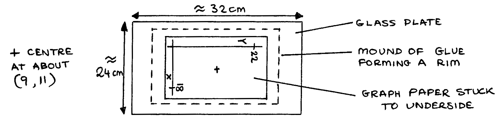
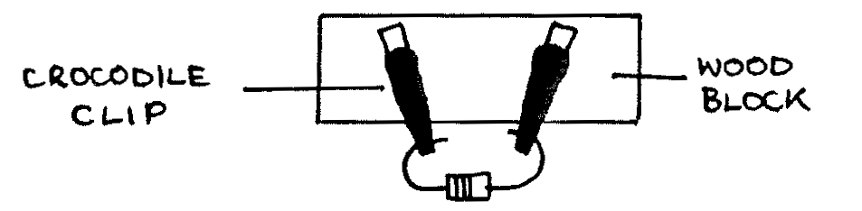
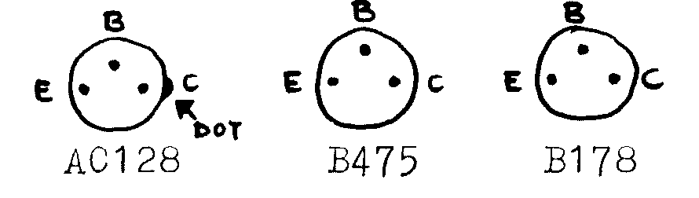
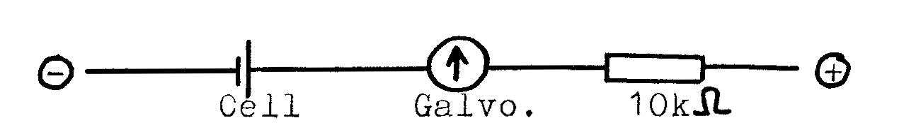

Further Description of Apparatus for Teachers and Technicians¶
Practical Exercises:
A1-1 A large model of a vernier scale can help students. For the Archimedes’ bridge, use any mechanism such that the student can suspend the microscope slide in the beaker and take the apparent weight measurement using the beam balance.
A1-2 Ensure that the books supplied to students contain all the required information.
B1-1 None
B1-2 Unknown mass should be about \(250\text{g}\).
B3-1 Height ‘PR’ should not exceed \(10\text{cm}\) to avoid sliding of the axel.
B5-1 Stick should be about \(1.2\text{m}\) long with 16 equally spaced holes.
B5-2 A spring of mass \(6\text{g}\) will have an effective mass, m, of \(2\text{g}\). For a larger spring the effective mass will be greater.
B5-3 None
C1-1 Sulfuric acid and caustic soda are suitable dilute acid and alkaline.
C2-1 Other liquids, for example kerosene, may be tried but will rot the rubber tubing.
C3-1 Expected value for the Young’s modulus along the grain is about \(10\text{GPa}\).
C3-2 Magnifying glass is to help see the vernier scale. An old callipers glued to a wood strip makes a good mounted vernier scale.
C3-3 Ensure that the books supplied contain the required information. Supply the students with a box of many different materials which may be tested to destruction and a separate box of materials to be tested labled ‘Do not damage’ containing samples to be kept intact.
D1-1 The expansion sample is a hollow tube mounted in large metal blocks. Screws 1 and 2 fix the sample in the blocks. Screw 3 fixes the travelling block to the stationary block.
D2-1 A wooden calorimeter lid can be drilled to accept a rubber bung. The central wire should be in a glass tube through the bung extending to the bottom of the heater to avoid a short circuit. The right-hand wire should go through a glass tube through the bung to avoid melting the rubber. Uninsulated Nichrome resistance wire (Resistance about \(1\Omega\)) is suitable and should be as thick as possible. The wires can be brought out to two connectors fixed to the top of the wooden lid. In the ‘Theory’ section, the theory of ‘cooling correction’ can be researched further online or may be in your local physics texts.
E1-1 If the sonometer has no force meter, a spring balance can be fitted. The meter should be recalibrated in newtons if it reads grams. A sticker should be put nearby giving the maximum safe tension for the wire (e.g. “\(25\text{N}\) maximum”). Experiment 1, step 3, may need demonstrating if “same note” is not understood. A sounding box can be any hollow wooden box.
E3-1 The spectrometer should be set up in advance of each session. The candle could be replaced by a sodium lamp if one is available. A darkened room is required but total darkness is unnecessary. Make certain a suitable section on spectrometry is in the class text, or you supply supplemental materials that include the known wavelength of Sodium light.
F1-1 Glass plate:

Electrodes are made of thick copper wire soldered at joints. The circular electrode shoud be about \(8\text{cm}\) in diameter. The electrode support is a thin wooden strip on two wooden blocks.
F1-2 Other large value capacitors are suitable (e.g. \(2000\mu\text{F}\), etc.). Do not use less than \(500\mu\text{F}\). The ammeter can be a galvanometer with a suitable resistance wire shunt. Note that many capacitors are accurate \(\pm 10 \%\) and results will reflect this.
F2-1 A Daniell cell could be substituted.
F2-2 Use a resistance wire for the galvanometer shunt. Resistors can be substituted for the resistance box. Block with crocodile clips to hold the components can be included with the apparatus.

The components: A) resistance of about \(5\Omega\), B) \(6\text{V}\) bulb preferably \(0.5\text{A}\) type, C) ensure the electrodes are clean, D) any semiconductor diode is suitable.
F2-3 For the resistor, use copper wire (\(36\text{SWG}\) enamelled is suitable) wound onto a strip of cardboard and placed inside the test tube. Use about \(15\text{m}\) of wire to give a resistance of about \(10\Omega\). Solder insulated stranded copper wire onto the thin copper wire with the joints inside of the test tube. Make cuts in the rubber bung to allow the insulated wire to exit the tube. The thermometer with a scale 0°C to 100°C should also pass through the bung.
F2-4 A range of different material, length and thickness wire for \(R_x\) can be mounted on the same board. Provide at least three different wires to test as \(R_x\).
F5-1 Thick copper wire formed into a rectangle \(35\text{cm}\) long and \(1\text{cm}\) wider than the magnets works well as the coil. Be certain the coil does not make a closed circuit through the end opposite to the magnets. For question 2 of the analysis, a text available to the students should be provided. The authors have used Advanced Level Physics by Nelkon and Parker (fourth edition), pp 775-776, or University I Physics by Sears, Zamansky, and Young (fifth edition) pp 725-728 as a reference.
F5-2 The mounted coil can be easily constructed from 10 turns of stiff copper wire bound with insulating tape, placed in a slot cut in a wooden board. The coil must not be fixed to the board, this to allow substitution of different coils. The board needs legs to support it above the bench.
F6-1 300 turn coil: \(36\text{SWG}\) copper on a cardboard former to be removeable from C-core. Solder on stranded insulated copper wires for connection, and cover the \(36\text{SWG}\) wire with insulating tape. Students will need help operating the CRO. An AC voltmeter could be substituted for the CRO but the students will learn less, and the readings will be rms.
F6-2 300 turn and 150 turn coils constructed as in F6-1.
G1-1 For the ammeter, a multimeter or two ammeters of different ranges can be used. The triode specified, TEL521, from Teltron LTD., London, works well but any triod with clearly labeled connections is also suitable.
G2-1 Microammeter can be a Nakamura galvanometer (\(2.5\mu\text{A}\) per division) and the milliameter can be a Weir galvanometer (3mA full scale deflection (fsd)). Rheostats 1k\(\Omega\) to \(10\text{k}\Omega\) are preferred. A \(15\Omega\) rheostat is useable but it will run down batteries quickly.
Some common pnp transistors (view of underside):

Testing old transistors using the following setup:

1) Find two wires of the transistor with no conduction in either direction. The base wire is the other wire. (Failure to find this: transistor broken)
2) With Base +, another wire -: conduction means that the transistor is npn.
5) To distinguish C and E is difficult. Try the experiment G2-1. If \(\beta >40\) then the choice of C and E made was probably correct.
Nb: npn transistors can easily be used in the experiment but the battery connections must be reversed.
H3-1 Wooden cubes are easily made (edges about \(1\text{cm}\) each). Ensure edges are clean and even and mark the symbols \(\odot\) and \(\otimes\) on opposite faces (leaving 4 blank faces).
PAST EXAM PAPERS:
77ALTA-Q2 A heavy weight must be placed on the base of the stand or it will topple over. Both liquid A and liquid B are water. Add some Potassium Permanganate (\(\text{KMnO}_4\)) to liqiud B to raise an element of doubt for the students.
80ALTB-Q1 Prisms may be placed on A and B. Expected value of the Young’s modulus is about \(14\text{GPa}\).
84-Q1 None
85-Q1 None
85-Q2 Have a thermos flask for the hot water. Pliers are useful for holding the calorimeter over the stove when blackening it.
86-Q2 A small (\(25\text{cm}^3\)) calorimeter is essential to ensure a measureable change in the rate of cooling.
86-Q3 None
87-Q1 The burette or cylinder must have a diameter of \(\ge 3\text{cm}\) to avoid surface effects and must \(\ge 30\text{cm}\) deep. Liquid L is engine oil, SAE 40. Typical values for \(\rho_1\) and \(\rho_2\) are \(8800\text{kg}^{-3}\) and \(900\text{kg}^{-3}\).
General:
Battery boxes: It is worthwhile to construct a good number ranging from 1 cell to 6 cell capacity.
Connecting leads: A large number are needed, if possible with crocodile clips and/or plugs, made of stranded insulated wire (standard useful lengths are \(40\text{cm}\) and \(60\text{cm}\)).